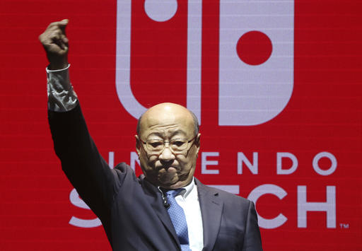

Welcome to the Nintendo 2017 Summar presentation in Iceland webpage. Please look on below the page to get more infomation on the time and place for the Nintendo presentation event.
Nintendo 2017: Everything you need to know about this year's gaming extravaganza.
It’s a big year for Nintendo and according to Nintendo of America's president Reggie Fils-Aime the company is planning a "big" presentation to reflect this.
It's been a few years since Nintendo has done a traditional presentation briefing, however, Fils-Aime has recently told fans that we can expect "big" things from Nintendo at this year's show.
Nintendo has a lot to play for at this year’s presentation. The Switch will be five months old and Nintendo will need to use its presence at the show to maintain the console’s momentum, and convince people that it has a lot of games coming for the console for the coming years.
It’s an exciting show for the big player in the industry, Nintendo will be competeing to get the most out of the gaming convension by by saving their biggest announcements for the show.
Nintendo reveals plans for Nintendo Switch presentation.

In a presentation to financial analysts today in Tokyo, Nintendo Co., Ltd. president Tatsumi Kimishima announced that major details regarding the company’s new Nintendo Switch home gaming system will be shared at the Nintendo Switch Presentation 2017. This will be an event for invited media, financial analysts and trade partners in Tokyo that will be globally livestreamed on Jan. 12, U.S. time. The presentation will include the launch date and pricing for Nintendo Switch, as well as a look at the lineup of games currently in development.
Kimishima also announced that Nintendo Switch sampling events for invited media, partners, and consumers will take place in the U.S. and Europe after the presentation at later dates. There will be opportunities for the public to participate in other hands-on events around the same time, details of which will be announced later.
The exact time of the Nintendo Switch Presentation 2017 will be announced through Nintendo’s social media channels
Please sign up for the club Nintendo newsletter for more information on this glorious show and too stay on track with future events;